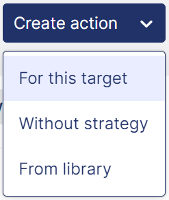

Action Reports: Create and Attach an Action to a Strategy
SEARCH TIP Press CTRL + F (Windows and Linux) or CMD + F (Mac) to search within this page.
To access this screen, click: Strategy > My actions > Action Reports.
Some actions, such as screen access, are permitted only for authorized users, that is, users with the appropriate profile. In other words, if the user does not have the right profile, the user cannot perform the action.
To configure this security (also called user rights), complete the following steps:
-
Define the profiles in the Profile Management screen.
-
Define users and attach one or more profiles to them in the User Management screen.
-
Assign user rights to the desired profiles in the Profile Matrix screen.
The table below contains screen actions that are related to user rights:
| Module | Screen | Action |
|---|---|---|
|
My actions |
Action reports |
Screen access |
|
Validate the action |
||
|
Refuse the action |
||
|
Revise the year of the action |
||
|
Update the progress of the action |
||
|
Update the actuals of the action |
||
|
Update the budget for the action. |
||
|
Add an action without validation |
||
|
Abort an action |
||
|
Update action status |
||
|
Start an action |
||
|
Validate/reject a pending action |
||
|
Update warnings for actions |
||
|
Update actions even after its status was updated |
||
|
Workflow - Validate action |
||
|
Workflow - Unvalidate action |
||
|
Workflow - Close action |
||
|
Workflow - Unclose action |
||
|
Create an unattached action without workflow/status |
For more information on this screen, see the following documentations:
Introduction
This documentation presents you the two main features of the Action Reports screen:
Recommended Workflow
-
Create strategies on the Strategy Management screen.
-
Create stakes, targets level 1 and targets level 2 on the Strategy Deployment screen.
-
Create actions on the Strategy Deployment screen or on this screen.
-
Configure indicator tracking:
-
Bind quantitative indicators to stakes, targets, and/or actions for progress tracking.
-
Optional: Bind financial indicators to actions for OPEX and CAPEX tracking.
-
-
Enter quantitative target values on the Indicator Tracking screen.
Create an Action
Authorized users can create an action in three ways:
Before Creating an Action
-
Plan your hierarchy: Define all stakes, targets, and actions before starting.
-
Verify date ranges: Ensure child date ranges fit within parent ranges.
-
Confirm entity access: Check that you have rights to all necessary entities.
-
Prepare indicators: Identify which indicators you will bind to actions.
Create and Attach an Action to a Strategy and a Target
To create an action that is attached to a strategy and a target selected in the POV:
-
Click Create action, then For this target.

Create action drop-down menu
The Create new action pop-up panel appears in full screen.
-
Fill out the Identification and Deployment tabs.
You can always go back to the main screen and fill out optional tabs later. To do so, click the button at the top left of the pop-up panel.
Navigation Between Tabs
Button labels change based on the current tab:
| Tab | Button Displayed |
|---|---|
|
Identification |
Save |
|
Deployment |
Deploy |
|
Follow-up |
Save and continue |
|
ESRS link |
Save |
You can also use the Previous button or click tab names directly after saving initial data.
Identification Tab
The first step in creating an action is to provide identification items.
Below are two tables, the first one providing you mandatory fields, the second one the optional fields:
| Field | Description |
|---|---|
|
Label |
Action label in all available languages. |
|
Start date |
Start date of the action. Must be lower than end date and within the time frame of the strategy and the higher deployment levels. |
|
End date |
End date of the action. Must be higher than start date and within the time frame of the strategy and the higher deployment levels. |
|
Periodicity |
Data collection frequency of the action:
|
|
Theme |
Action theme. |
| Field | Description |
|---|---|
|
Icon |
To add an icon to an action:
|
|
Person in charge |
User responsible for the action. |
|
Description |
Action description. |
|
Private action |
When the action is private, you cannot create a new initiative based on this action. To set the action as private, check the Private action box. |
|
Attachments |
To add an attachment, drag and drop or click the Attachments zone.
NOTE Attachment limitations:
|
To access the Deployment tab, click the Save button.
Deployment Tab
The second step in creating an action is to deploy the action on entities. To do so:
-
Select the Deployment Mode:
-
Default: Only one entity is selected or deselected on click.
-
The entity and its children: The entity and its direct child entities (N-1 level) are selected or deselected on click.
-
The entity and its descendants: The entity and all its child entities are selected or deselected on click.
-
-
Check the desired boxes to select one or multiple entities.
To access the Follow-up tab, click the Deploy button at the bottom right of the Deployment tab.
Follow-Up Tab
The third step in creating an action is to fill out information on quantitative, financial, and/or human resources follow-up:
| Block | Description |
|---|---|
|
Quantitative follow-up |
By linking an action to an indicator for quantitative follow-up, you can retrieve its values and then track its progress over time. NOTE An indicator linked to a deployment level is called a quantitative target in the CSR Insight application. For more information, see Indicator Tracking. |
|
Financial follow-up |
By linking an action to an indicator for OPEX or CAPEX follow-up, you can retrieve its values as OPEX or CAPEX actuals, and then track its progress over time. You can also allocate an OPEX or CAPEX budget to an action on the Budget Definition screen. |
|
Human resources follow-up |
Allocate FTE / staffing to an action. |
To fill out information on quantitative follow-up:
-
Click the Bind to an indicator button from the Quantitative follow-up block.
The Choose indicator pop-up panel appears.
-
Select the following items from the drop-down menus:
-
Chapter
-
Theme
-
Section
-
Indicator
Quantitative target information is automatically displayed, that is:
-
Absolute value
-
Percentage
-
Target year
-
-
Select the Input mode from the drop-down menu that appears:
-
Bottom up: Quantitative target values of parent entities are automatically consolidated by aggregation of the quantitative target values of the child entities.
-
Top down: Quantitative target values of parent entities are consolidated using a distribution mode. Quantitative target values of child entities are consolidated by recalculation.
The indicator label and unit appear in chips at the top of the action card.
-
-
Click the button to enter, consolidate and distribute quantitative target values across the entities and on the temporal axis through the Indicator Tracking screen.
To fill out information on financial follow-up:
-
Click the button to define an OPEX or CAPEX budget.
The Budget Definition screen appears.
-
Optional: Retrieve OPEX or CAPEX actuals from the values of an indicator:
-
Click the Bind to an indicator button from the Financial follow-up block.
The Choose indicator pop-up panel appears.
-
Select the following items from the drop-down menus:
-
Chapter
-
Theme
-
Section
-
Indicator
-
NOTE You can manually enter OPEX or CAPEX actuals instead of retrieving them from an indicator. Read View or Enter OPEX and CAPEX Actuals.
-
To fill out information on human resources follow-up, enter the number of FTE / staffing you want to allocate to the action from the Human resources follow-up block.
To access the ESRS link tab, click the Save and continue button at the bottom right of the Follow up tab.
ESRS Link Tab
NOTE This tab is related to the CSRD module. For more information, see Corporate Sustainability Reporting Directive (CSRD).
After creation, a target or action automatically inherits the ESRS links and responses to MDRs from higher deployment levels.
When a stake or target is updated, ESRS links and responses to MDRs are propagated by overwriting the values of the associated targets and/or actions.
You can manually edit inherited information for an action. This change does not affect the associated target or other actions.
You can also manually copy one or all responses to MDRs on associated targets and actions:
-
To copy the response to an MDR, click on the button corresponding to the desired MDR.
-
To copy all the responses to the MDRs, click on the button.
An icon appears for each inherited response.
The fourth and last step in creating an action is to link the action to the ESRS to which it contributes and enter responses to MDRs.
To do so:
-
Check one or multiple boxes to select ESRS to which the action contributes.
-
Fill out the fields that allow text entry for each MDR category, as desired:
-
MDR Policies
-
MDR Action
-
MDR Target
NOTE There are three types of fields:- Qualitative fields: You can enter rich text (bold, italic, etc.).
- Normal fields: You can enter plain text.
- Automated fields: Fields that are automatically populated when the expected data exists.
-
-
Click Save.
A link is automatically created between the CSR Insight item and the corresponding data points and data parts on the Generation of Regulatory Reports screen, except if they are already linked to another item type.
This type of link is called Strategy.
-
Optional, but recommended: Edit or enter new responses through the Summary of Contributions to MDRs screen.
You have finished filling out all tabs.
Create a Non-Attached Action
To create an action that is not attached to a strategy and a target:
-
Click Create action, then Without strategy.
The Create new action pop-up panel appears.
-
Follow the same steps as in the Create and Attach an Action to a Strategy and a Target section above (except the first step).
NOTE Authorized users can create non-attached actions without workflow and status. To do so, check the Action without workflow and status box when filling out the Identification tab.
Create an Action from the Library of Initiatives
To create an action from the Library of Initiatives:
-
Click Create action, then From library.
The Associate action pop-up panel appears.
-
Optional: Search for the initiative with which you want to create an action by typing at least three letters in the search box, and/or using the Duration, Indicator, and Theme filters.
As you type, or after selecting a filter, the initiatives list changes.
-
Select the check box of the initiative with which you want to create an action.
A new Associate action pop-up panel appears.
-
Select the Strategy, the Stake, the Target level 1 and the Target level 2, from the drop-down menus.
-
Click OK.
The Create new action pop-up panel appears with the initiative information filled in.
-
Fill out other required information, and optional information if desired, as explained in the Create and Attach an Action to a Strategy and a Target section above.
NOTE To manage the initiatives, see Library of Initiatives.
After Creating an Action
You have successfully created an action. The next steps depend on the type and purpose of the action you created:
-
For quantitative targets (stakes, targets, or actions bound to indicators):
-
Enter quantitative target values on the Indicator Tracking screen.
-
Monitor progress on the Quantitative Target Synthesis screen.
-
-
For actions with financial tracking:
-
Define budgets on the Budget Definition screen.
-
Track actuals through this screen. See Track the OPEX and CAPEX Progress.
-
-
For ESRS-linked items:
-
Review summaries on the Summary of Contributions to MDRs screen.
-
Attach an Existing Action to a Strategy
NOTE This feature is available only for existing actions not attached to a strategy in the detailed view mode.
To attach an action to a strategy:
-
Select the detailed view mode with the switch button.
-
Select the action you want to attach to a strategy in the action list.
An action card appears.
-
Click the button, then Attach an action to a strategy.
The Associate action pop-up panel appears.
-
Select the Strategy, the Stake, the Target level 1 and the Target level 2, from the drop-down menus.
-
Click OK.
The icon appears below the action label.
Edit an Action
To resume filling out the other tabs:
-
Select your action from the action list.
An action card appears.
-
Click the button at the top right of the action card.
-
Click Show details.
The Edit action pop-up panel appears in full screen.
NOTE Update restrictions:
- Identification and Deployment tabs: Editable only for non-approved actions without any data and whose periodicity matches that selected in the POV
- Exception: Action labels and descriptions are always editable.